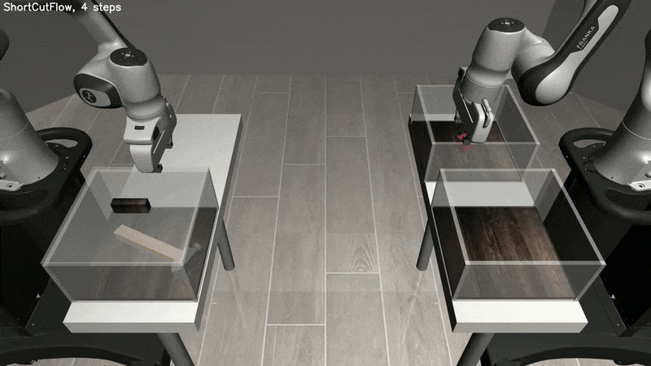
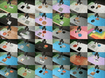
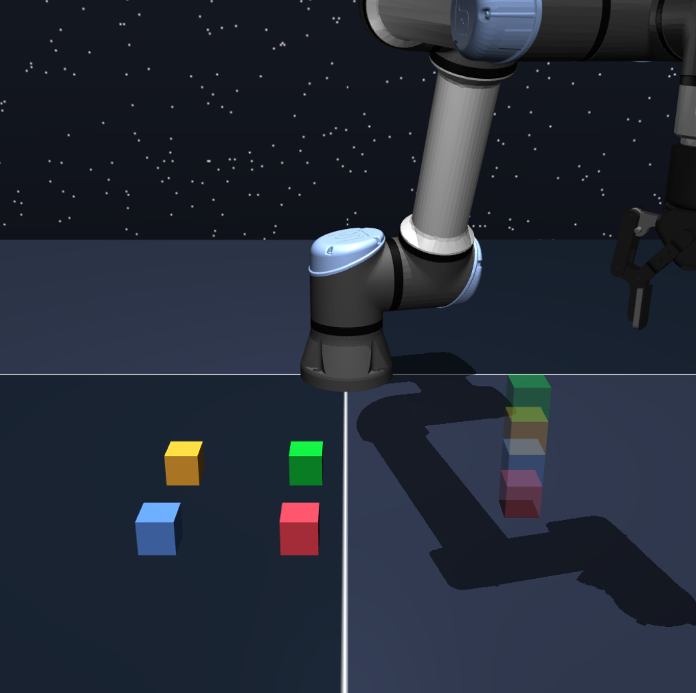
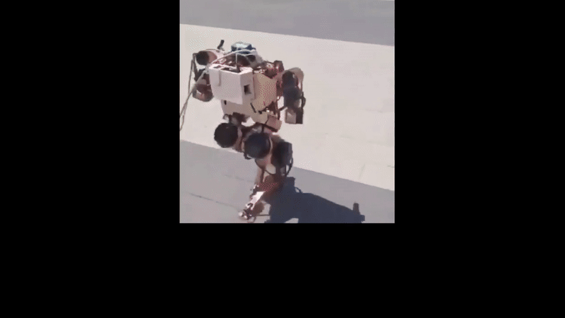
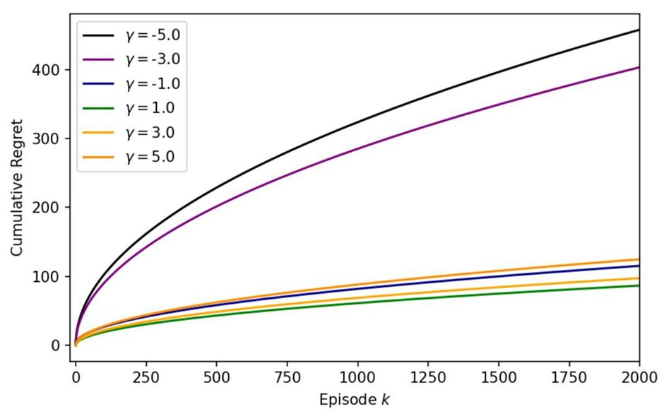

New blog post: Beyond Singularity: The Democratic Promise of Physical AI. | Jun 2026
Released ENPIRE, a coding agent harness for real-world policy self-improvement. | Jun 2026
BFM-zero accepted at ICLR 2026. | Jan 2026
I am a M.S. in Robotics Student at Robotics Institute, Carnegie Mellon University.
I am advised by Professor Guanya Shi.
I work on building scalable robot learning system that act reliably in the real world.
Email: tonghez [at] andrew.cmu.edu
New blog post: Beyond Singularity: The Democratic Promise of Physical AI. | Jun 2026
Released ENPIRE, a coding agent harness for real-world policy self-improvement. | Jun 2026
BFM-zero accepted at ICLR 2026. | Jan 2026





Beyond Singularity: The Democratic Promise of Physical AI | June 2026
Understanding the Architecture of Flow VLAs | October 2025
The Mathematical Building Blocks of Diffusion Generative Models | October 2025
ENPIRE is featured on the NVIDIA website. Read more. | Jun 2026
BFM-Zero is featured in the CMU Robotics Institute newsletter. Read more. | Dec 2025
Invited talk at Tsinghua University on online RL for flow matching policies. | Jun 2025
Jul 2025: Beijing Municipal Outstanding Graduate
Jul 2025: Tsinghua University Excellent Graduate
Oct 2024: National Scholarship of China
Oct 2023: National Scholarship of China
Oct 2023: Excellent Student Leader, Tsinghua University
Community Services
Reviewing: RSS 2026, TMLR 2026, NeurIPS 2026, CoRL 2026